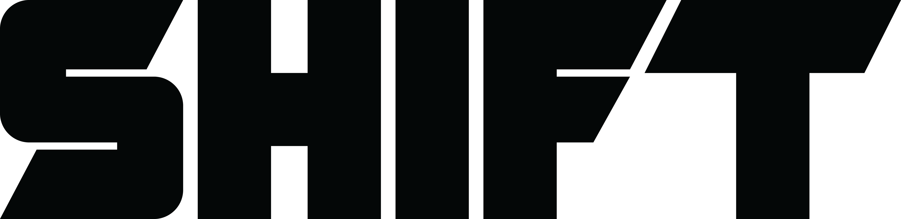
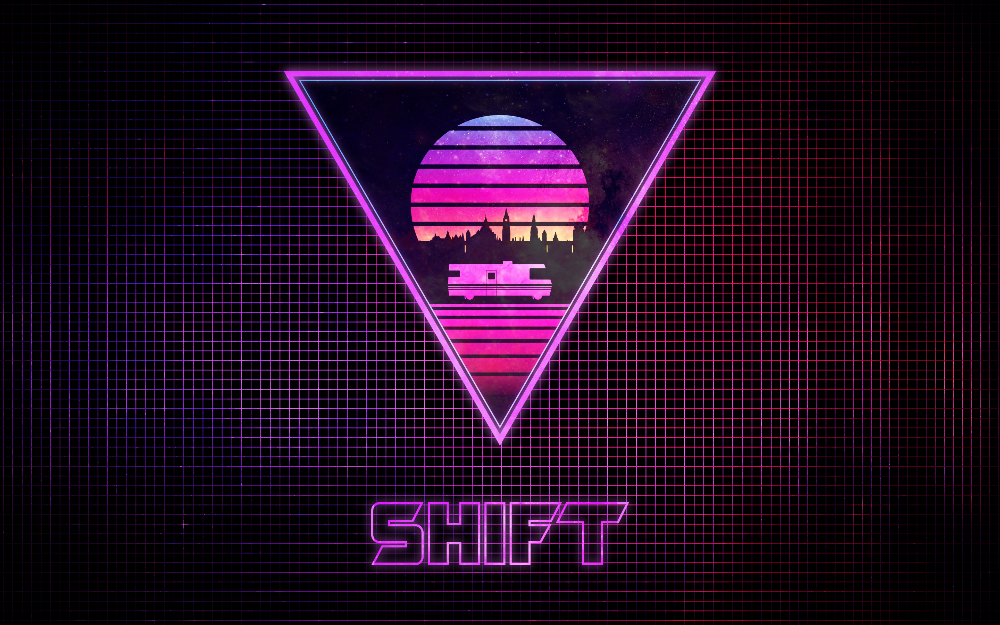
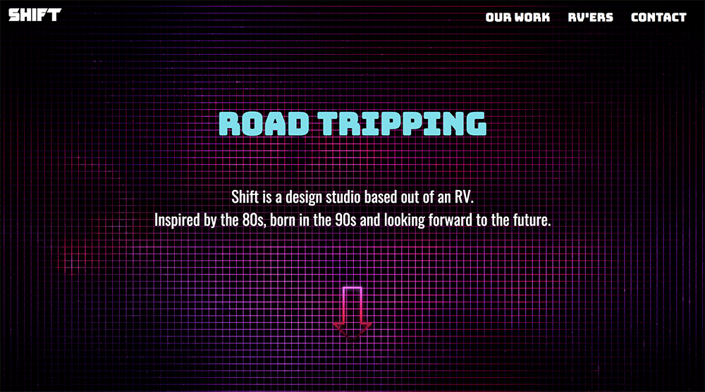

Shift is the weird-but-would-be-totally-awesome idea that myself and some friends had to create a design studio based out of an RV. What started out as a joke turned into a fully branded project.
We quickly decided to give it a "totally rad" 80's vibe. There's something about the crazy colours of 80's design that I love, so this was a great opportunity to work in that style.

This is the Shift logo. It represents what I feel is a good balance of 80's design, but still modern. It has that sleek and futuristic feel.

Here is an example of different stages in the design process. After researching my target demographics and their needs, I start by roughly sketching out feature and possible layouts. Onec I have a more focused idea of what I need the app to do and how, I create a more deatiled sketch which serves as a template for designing it digitally.
I decided to try my hand at a driving cycle. I chose to animate it in a very stylized way using only bright neon colours.

I brought this concept to life on the web as well, designing a landing page for the Shift website. Yeah, I know the subhead is super cheesey, but it's the 80's right?